4 Summarizing data
4.1 Summary statistics
This section discusses how to produce and analyze basic summary statistics. Summary statistics are often used to describe variables in terms of 1) the central tendency of the frequency distribution, and 2) the dispersion of values.
A measure of central tendency is a single value that attempts to describe the data by identifying the central position within the data. There are various measures of central tendency as the following table shows.
| Statistic | Description | Definition |
|---|---|---|
| Mean | The average value when you sum up all elements and divide by the number of elements | \(\bar{X}=\frac{\sum_{i=1}^{n}{X_i}}{n}\) |
| Mode | The value that occurs most frequently (i.e., the highest peak of the frequency distribution) | |
| Median | The middle value when the data are arranged in ascending or descending order (i.e., the 50th percentile) |
The dispersion refers to the degree to which the data is distributed around the central tendency and can be described in terms of the range, interquartile range, variance, and standard deviation.
| Statistic | Description | Definition |
|---|---|---|
| Range | The difference between the largest and smallest values in the sample | \(Range=X_{largest}-X_{smallest}\) |
| Interquartile range | The range of the middle 50% of scores | \(IQR=Q_3-Q_1\) |
| Variance | The mean squared deviation of all the values of the mean | \(s^2=\frac{1}{n-1}*\sum_{i=1}^{n}{(X_i-\bar{X})^2}\) |
| Standard deviation | The square root of the variance | \(s_x=\sqrt{s^2}\) |
The answer to the question which measures to use depends on the level of measurement. Based on the discussion in chapter 1, we make a distinction between categorical and continuous variables, for which different statistics are permissible as summarized in the following table.
| OK to compute… | Nominal | Ordinal | Interval | Ratio |
|---|---|---|---|---|
| frequency distribution | Yes | Yes | Yes | Yes |
| median and percentiles | No | Yes | Yes | Yes |
| mean, standard deviation, standard error of the mean | No | No | Yes | Yes |
| ratio, or coefficient of variation | No | No | No | Yes |
As an example data set, we will be using a data set containing music streaming data from a popular streaming service. Let’s load and inspect the data first.
## [1] 5000 7The data set contains information about several purchases made in a number of stores in 2023. The dim()-function returns the dimensions of the data frame (i.e., the number of rows and columns). As can be seen, the data set comprises information for 5000 transactions and 7 variables (columns). The variables in the data set are:
- Date: date of purchase
- Store: Store ID/number
- Category: product category of the purchased item
- Brand: name of the brand of the purchased item
- Sales_Amount: the monetary value of the purchase (i.e., store’s revenue)
- Units_Sold: number of units purchased
- Customer_Age: the age of the customer who made the purchase
In a first step, we need to make sure all variables are in the correct format, according to these variable definitions:
library(tidyverse)
sales_data <- sales_data %>% # pipe data into mutate
dplyr::mutate(Date = as.Date(Date), # convert to date
Store = as.factor(Store), # convert to factor w. new labels
Category = as.factor(Category), # convert to factor with values as labels
Brand = as.factor(Brand))
head(sales_data)In the following sections, we will inspect the data in more detail.
4.1.1 Categorical variables
Categorical variables contain a finite number of categories or distinct groups and are also known as qualitative or non-metric variables. There are different types of categorical variables:
- Nominal variables: variables that have two or more categories but no logical order (e.g., store ID, brand name). A dichotomous variable (also referred to as dummy variable or binary variable) is simply a nominal variable that only has two categories (absent in this data set).
- Ordinal variables: variables that have two or more categories that can also be ordered or ranked (absent in this data set).
Let’s now start to investigate the nominal variables in our data set.
As the table above shows, the only permissible operation with nominal variables is counting. That is, we can inspect the frequency distribution, which tells us how many observations we have per category. The table() function creates a frequency table that counts how many observations we have in each category.
##
## Clothing Electronics Furniture Grocery Sports Toys
## 1265 490 286 1746 603 610##
## Store 1 Store 10 Store 2 Store 3 Store 4 Store 5 Store 6 Store 7
## 494 506 514 522 461 488 502 465
## Store 8 Store 9
## 516 532The numbers associated with the factor level in the output tell you, how many observations there are per category. For example, there are 1265 purchases from the Clothing category; also, 532 are from Store No. 9.
Often, we are interested in the relative frequencies (share of observations), which can be obtained by using the prop.table() function.
##
## Clothing Electronics Furniture Grocery Sports Toys
## 0.2530 0.0980 0.0572 0.3492 0.1206 0.1220##
## Store 1 Store 10 Store 2 Store 3 Store 4 Store 5 Store 6 Store 7
## 0.0988 0.1012 0.1028 0.1044 0.0922 0.0976 0.1004 0.0930
## Store 8 Store 9
## 0.1032 0.1064Now the output gives you the relative frequencies. For example, the share of purchases (transactions) of groceries is ~34.9%, ~10.3% of purchases are from Store number 2.
Note that the above output shows the overall relative frequencies. In many cases, it is meaningful to consider conditional relative frequencies. This can be achieved by adding a ,1 to the prop.table() command, which tells R to compute the relative frequencies by row (which is in our case the Store variable). The following code can be used to show the relative frequency of purchases from specific categories by store
## Category
## Store Clothing Electronics Furniture Grocery Sports Toys
## Store 1 0.26315789 0.08906883 0.05465587 0.34412955 0.11133603 0.13765182
## Store 10 0.21541502 0.11264822 0.05533597 0.35177866 0.13241107 0.13241107
## Store 2 0.27237354 0.08171206 0.05642023 0.35019455 0.12062257 0.11867704
## Store 3 0.24329502 0.10536398 0.04214559 0.34674330 0.12452107 0.13793103
## Store 4 0.26030369 0.09327549 0.05856833 0.36008677 0.11496746 0.11279826
## Store 5 0.25819672 0.10655738 0.06352459 0.33196721 0.12295082 0.11680328
## Store 6 0.23505976 0.07569721 0.07370518 0.34462151 0.14741036 0.12350598
## Store 7 0.24301075 0.10752688 0.04516129 0.36559140 0.11397849 0.12473118
## Store 8 0.29844961 0.09496124 0.06201550 0.33527132 0.10852713 0.10077519
## Store 9 0.24060150 0.11278195 0.06015038 0.36278195 0.10902256 0.11466165As can be seen, the the share of transactions from the Clothing category is high in all stores, with the highest share of ~30% of transactions in Store 8.
4.1.2 Continuous variables
4.1.2.1 Descriptive statistics
Continuous variables (also know as metric variables) are numeric variables that can take on any value on a measurement scale (i.e., there is an infinite number of values between any two values). There are different types of continuous variables as we have seen in chapter 1:
- Interval variables: while the zero point is arbitrary, equal intervals on the scale represent equal differences in the property being measured. E.g., on a temperature scale measured in Celsius the difference between a temperature of 15 degrees and 25 degrees is the same difference as between 25 degrees and 35 degrees but the zero point is arbitrary (there are different scales to measure temperature, such as Fahrenheit or Celsius, and zero in this case doesn’t indicate the absence of temperature).
- Ratio variables: has all the properties of an interval variable, but also has an absolute zero point. When the variable equals 0.0, it means that there is none of that variable (e.g., sales amount and customer age in our example).
For interval and ratio variables we can compute the mean as a measure of central tendency, as well as the variance and the standard deviation as measures of dispersion. Computing descriptive statistics for continuous variables is easy and there are many functions. The easiest are:
## [1] 35.58## [1] 35## 50%
## 35## 25% 50% 75%
## 27 35 43## [1] 18
## attr(,"freq")
## [1] 382We can also use functions that return multiple statistics at once; those are available in different packages that let you calculate summary statistics (including the summary() function from the base package). In this tutorial, we will use the describe() function from the psych package. Note that you could just as well use other packages to compute the descriptive statistics (e.g., the stat.desc() function from the pastecs package). Which one you choose depends on what type of information you seek (the results provide slightly different information) and on personal preferences.
We could, for example, compute the summary statistics for the variables “sales amount”, “units sold”, and “customer age” in our data set as follows:
## vars n mean sd median trimmed mad min max range
## Sales_Amount 1 5000 279.29 282.95 202.95 226.90 218.36 10 2181.03 2171.03
## Units_Sold 2 5000 6.35 4.97 5.00 5.64 4.45 1 20.00 19.00
## Customer_Age 3 5000 35.58 11.07 35.00 35.19 11.86 18 80.00 62.00
## skew kurtosis se
## Sales_Amount 1.75 3.59 4.00
## Units_Sold 1.06 0.36 0.07
## Customer_Age 0.32 -0.36 0.16You can see that the output contains measures of central tendency (e.g., the mean) and dispersion (e.g., standard deviation) for the selected variables. It can be seen, for example, that the mean of the sales amount variable is 279.29 while the median is 202.95. This already tells us something about the distribution of the data. Because the mean is higher (though not as substantially as it could get, in theory) than the median, we can conclude that there are a some purchases that costed somewhat more than others, potentially resulting in a right skew of the distribution. The median as a measure of central tendency is generally less susceptible to outliers.
In the above command, we used the psych:: prefix to avoid confusion and to make sure that R uses the describe() function from the psych package since there are many other packages that also contain a desribe() function. Note that you could also compute these statistics separately by using the respective functions (e.g., mean(), sd(), median(), min(), max(), etc.). There are many options for additional statistics for this function. For example, you could add the argument IQR = TRUE to add the interquartile range to the output.
The psych package also contains the describeBy() function, which lets you compute the summary statistics by sub-groups separately. For example, we could compute the summary statistics by category as follows:
describeBy(select(sales_data, Sales_Amount, Units_Sold,
Customer_Age), sales_data$Category, skew = FALSE,
range = FALSE)##
## Descriptive statistics by group
## group: Clothing
## vars n mean sd se
## Sales_Amount 1 1265 338.44 118.93 3.34
## Units_Sold 2 1265 5.55 2.88 0.08
## Customer_Age 3 1265 35.62 11.10 0.31
## ------------------------------------------------------------
## group: Electronics
## vars n mean sd se
## Sales_Amount 1 490 854.81 300.01 13.55
## Units_Sold 2 490 1.98 0.83 0.04
## Customer_Age 3 490 35.49 11.31 0.51
## ------------------------------------------------------------
## group: Furniture
## vars n mean sd se
## Sales_Amount 1 286 711.63 200.33 11.85
## Units_Sold 2 286 1.48 0.50 0.03
## Customer_Age 3 286 35.22 11.37 0.67
## ------------------------------------------------------------
## group: Grocery
## vars n mean sd se
## Sales_Amount 1 1746 51.73 19.34 0.46
## Units_Sold 2 1746 10.23 5.81 0.14
## Customer_Age 3 1746 35.69 10.92 0.26
## ------------------------------------------------------------
## group: Sports
## vars n mean sd se
## Sales_Amount 1 603 218.76 92.84 3.78
## Units_Sold 2 603 4.51 2.34 0.10
## Customer_Age 3 603 35.29 10.90 0.44
## ------------------------------------------------------------
## group: Toys
## vars n mean sd se
## Sales_Amount 1 610 202.83 87.78 3.55
## Units_Sold 2 610 4.53 2.23 0.09
## Customer_Age 3 610 35.72 11.26 0.46In this example, we used the arguments skew = FALSE and range = FALSE to exclude some statistics from the output.
R is open to user contributions and various users have contributed packages that aim at making it easier for researchers to summarize statistics. For example, the summarytools package can be used to summarize the variables. If you would like to use this package and you are a Mac user, you may need to also install XQuartz (X11) too. To do this, go to this page and download the XQuartz-2.7.7.dmg, then open the downloaded folder and click XQuartz.pkg and follow the instruction on screen and install XQuartz. If you still encouter an error after installing XQuartz, you may find a solution <a href=“href=”https://www.xquartz.org/” target=“_blank”>here.
library(summarytools)
print(dfSummary(select(sales_data, Sales_Amount, Units_Sold,
Customer_Age, Store, Category, Brand), plain.ascii = FALSE,
style = "grid", valid.col = FALSE, tmp.img.dir = "tmp",
graph.magnif = 0.65), method = "render", headings = FALSE,
footnote = NA)| No | Variable | Stats / Values | Freqs (% of Valid) | Graph | Missing | |||||||||||||||||||||||||||||||||||||||||||||||||||||||
|---|---|---|---|---|---|---|---|---|---|---|---|---|---|---|---|---|---|---|---|---|---|---|---|---|---|---|---|---|---|---|---|---|---|---|---|---|---|---|---|---|---|---|---|---|---|---|---|---|---|---|---|---|---|---|---|---|---|---|---|---|
| 1 | Sales_Amount [numeric] |
|
4635 distinct values |  |
0 (0.0%) | |||||||||||||||||||||||||||||||||||||||||||||||||||||||
| 2 | Units_Sold [integer] |
|
20 distinct values |  |
0 (0.0%) | |||||||||||||||||||||||||||||||||||||||||||||||||||||||
| 3 | Customer_Age [integer] |
|
57 distinct values |  |
0 (0.0%) | |||||||||||||||||||||||||||||||||||||||||||||||||||||||
| 4 | Store [factor] |
|
|
 |
0 (0.0%) | |||||||||||||||||||||||||||||||||||||||||||||||||||||||
| 5 | Category [factor] |
|
|
 |
0 (0.0%) | |||||||||||||||||||||||||||||||||||||||||||||||||||||||
| 6 | Brand [factor] |
|
|
 |
0 (0.0%) |
The ‘Missing’ column in the output above gives us information about missing values. It this case, there are no missing values; however, in reality there are usually at least a couple of lost or not recorded values. To get more precise analysis results, we might want to exclude these observations by creating a “complete” subset of our data. Imagine that we have a missing value in the variable “Sales_Amount”; we would create a subset by filtering that hypothetical observation out:
In the command above, !is.na() is used to filter the rows for observations where the respective variable does not have missing values. The “!” in this case translates to “is not” and the function is.na() checks for missing values. Hence, the entire statement can be read as “select the rows from the ‘sales_data’ data set where the values of the ‘Sales_Amount’ variable are not missing”.
As you can see, the output also includes a visualization of the frequency distribution using a histogram for the continuous variables and a bar chart for the categorical variables. The frequency distribution is an important element that allows us to assign probabilities to observed values if the observations come from a known probability distribution. How to derive these probability statements will be discussed next.
4.1.2.2 Using frequency distributions to go beyond the data
The frequency distribution can be used to make statements about the probability that a certain observed value will occur if the observations come from a known probability distribution. For normally distributed data, the following table can be used to look up the probability that a certain value will occur. For example, the value of -1.96 has a probability of 2.5% (i.e., .0250).

Figure 1.12: Standard normal table
There are two things worth noting. First, the normal distribution has two tails as the following figure shows and we need to take the probability mass at each side of the distribution into account. Hence, there is a 2.5% probability of observing a value of -1.96 or smaller and a 2.5% of observing a value of 1.96 or larger. Hence, the probability mass within this interval is 0.95.

Figure 1.13: Standard normal distribution
The second point is related to the scale of the distribution. Since the variables that we will collect can be measured at many different scales (e.g., number of streams, duration in milliseconds), we need a way to convert the scale into a standardized measure that would allow us to compare the observations against the values from the probability table. The standardized variate, or z-score, allows us to do exactly that. It is computed as follows:
\[\begin{align} Z=\frac{X_i-\bar{X}}{s} \end{align} \]
By subtracting the mean of the variable from each observation and dividing by the standard deviation, the data is converted to a scale with mean = 0 and SD = 1, so we can use the tables of probabilities for the normal distribution to see how likely it is that a particular score will occur in the data. In other words, the z-score tells us how many standard deviations above or below the mean a particular x-value is.
To see how this works in practice, let’s inspect the distribution of the ‘customer age’ variable from the sales data set. The hist()-function can be used to draw the corresponding histogram.
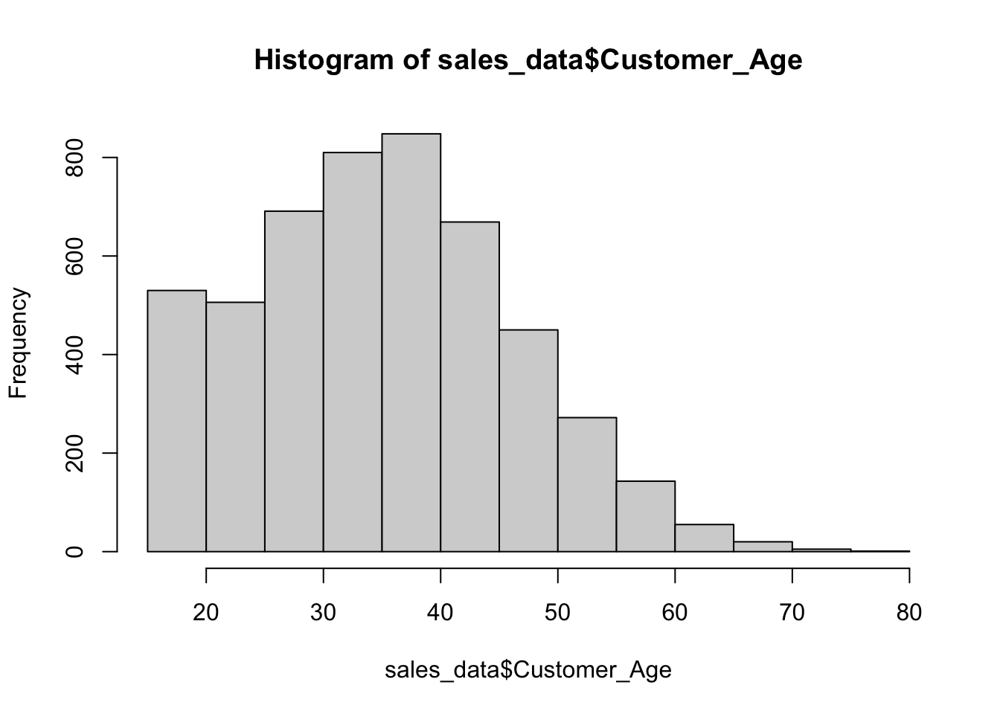
Figure 4.1: Histogram of tempo variable
In this case, the variable is measured on the scale “years lived” (so it takes values from 0 to, potentially, infinity). To standardize this variable, we will subtract the mean of this variable from each observation and then divide by the standard deviation. We can compute the standardized variable by hand as follows:
sales_data$age_std <- (sales_data$Customer_Age - mean(sales_data$Customer_Age))/sd(sales_data$Customer_Age)
# sales_data$age_std <-
# scale(sales_data$Customer_Age)If we create the histogram again, we can see that the scale has changed and now we can compare the standardized values to the values we find in the probability table.
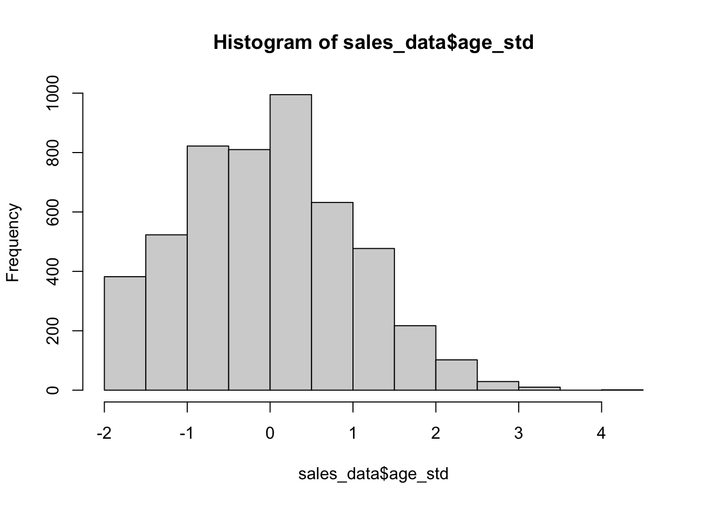
Figure 1.15: Histogram of standardized tempo variable
Instead of manually comparing the observed values to the values in the table, it is much easier to use the in-built functions to obtain the probabilities. The pnorm()-function gives the probability of obtaining values lower than the indicated values (i.e., the probability mass left of that value). For the value of 1.96, this probability mass is ~0.025, in line with the table above.
## [1] 0.0249979To also take the other end of the distribution into consideration, we would need to multiply this value by to. This way, we arrive at a value of 5%.
## [1] 0.04999579Regarding the standard normal distribution, it is helpful to remember the following numbers, indicating the points on the standard normal distribution, where the sum of the probability mass to the left at the lower end and to the right of the upper end exceed a certain threshold:
- +/-1.645 - 10% of probability mass outside this region
- +/-1.960 - 5% of probability mass outside this region
- +/-2.580 - 1% of probability mass outside this region
Going back to our example, we could also ask: what is the probability of obtaining the minimum (or maximum) observed value in our data? The minimum value on the standardized scale is:
## [1] -1.588711And the associated probability is:
## [1] 0.1121256Although the probability of observing this minimum value is low, there are very few observations in the extreme regions at each end of the histogram, so this doesn’t seem too unusual. As a rule of thumb, you can remember that 68% of the observations of a normally distributed variable should be within 1 standard deviation of the mean, 95% within 2 standard deviations, and 99.7% within 3 standard deviations. This is also shown in the following plot:

Figure 1.20: The 68, 95, 99.7 rule (source: Wikipedia)
In case of our ‘customer age’ variable, we do observe values that are more than 3 standard deviations away from the mean. In this and other instances, checking the standardized values of a variable may help you to identify outliers. For example, if you conducted a survey and you would like to exclude respondents who answered the survey too fast, you may exclude cases with a low probability based on the distribution of the duration variable.
4.2 Data visualization
This section discusses the important topic of data visualization and how to produce appropriate graphics to describe your data visually. You should always visualize your data first.

Figure 1.2: source: https://twitter.com/heyblake/status/1432070055949258752?s=20
The plots we created in the previous chapters used R’s in-built functions. In this section, we will be using the ggplot2 package by Hadley Wickham. It has the advantage of being fairly straightforward to learn and being very flexible when it comes to building more complex plots. For a more in depth discussion you can refer to chapter 4 of the book “Discovering Statistics Using R” by Andy Field et al. or read the following chapter from the book “R for Data science” by Hadley Wickham as well as “R Graphics Cookbook” by Winston Chang.
ggplot2 is built around the idea of constructing plots by stacking layers on top of one another. Every plot starts with the ggplot(data) function, after which layers can be added with the “+” symbol. The following figures show the layered structure of creating plots with ggplot.


4.2.1 Categorical variables
4.2.1.1 Bar plot
To give you an example of how the graphics are composed, let’s go back to the frequency table from the previous chapter, where we created a table showing the relative frequencies of categories in the sales data set.
library(tidyverse)
sales_data <- read.csv2("https://raw.githubusercontent.com/WU-RDS/RMA/refs/heads/main/data/data_visualization.csv", sep = ";") %>% # pipe data into mutate
mutate(Date = as.Date(Date), # convert to date
Store = as.factor(Store), # convert to factor w. new labels
Category = as.factor(Category), # convert to factor with values as labels
Brand = as.factor(Brand)) %>%
filter(!is.na(Sales_Amount))
head(sales_data)How can we plot this kind of data? Since we have a categorical variable (“category” is a “group” that unites several individual products), we will use a bar plot. However, to be able to use the table for your plot, you first need to assign it to an object as a data frame using the as.data.frame()-function.
table_plot_rel <- as.data.frame(prop.table(table(sales_data$Category))) #relative frequencies
head(table_plot_rel)Since Var1 is not a very descriptive name, let’s rename the variable to something more meaningful
Once we have our data set we can begin constructing the plot. As mentioned previously, we start with the ggplot() function, with the argument specifying the data set to be used. Within the function, we further specify the scales to be used using the aesthetics argument, specifying which variable should be plotted on which axis. In our example, we would like to plot the categories on the x-axis (horizontal axis) and the relative frequencies on the y-axis (vertical axis). The first layer of the plot is simply an empty space with defined axes but without any “filling”.
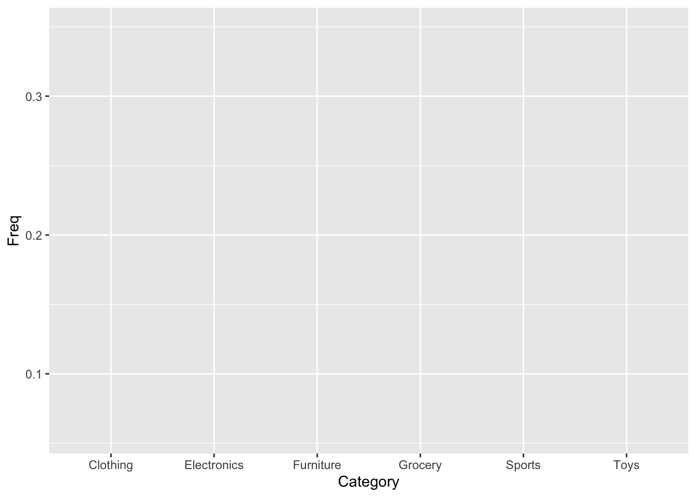
Figure 1.5: Bar chart (step 1)
You can see that the coordinate system is empty. This is because so far, we have told R only which variables we would like to plot but we haven’t specified which geometric figures (points, bars, lines, etc.) we would like to use. This is done using the geom_xxx() function (where “xxx” is replaced with the type of figure that you need: geom_line(), geom_boxplot(), etc.) A good overview of the various geom functions can be found here. In our case, we would like to use a bar chart for which geom_col is appropriate.
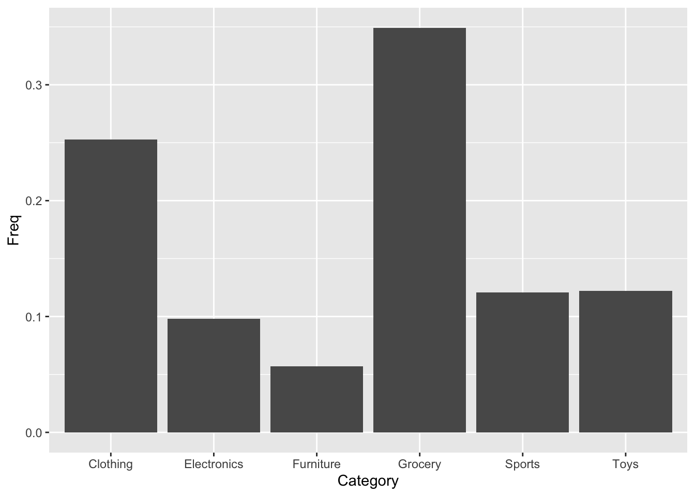
Figure 1.6: Bar chart (step 2)
Now we have specified the data (table_plot_rel and specific variables from it - Categories and Freq) and the shape (columns). Specifying this information is essential for plotting data using ggplot. Everything that follows now just serves the purpose of making the plot look nicer by modifying the appearance of the plot. How about some more meaningful axis labels? We can specify the axis labels using the ylab() and xlab() functions:
ggplot(table_plot_rel, aes(x = Category, y = Freq)) +
geom_col() + ylab("Relative frequency") + xlab("Category")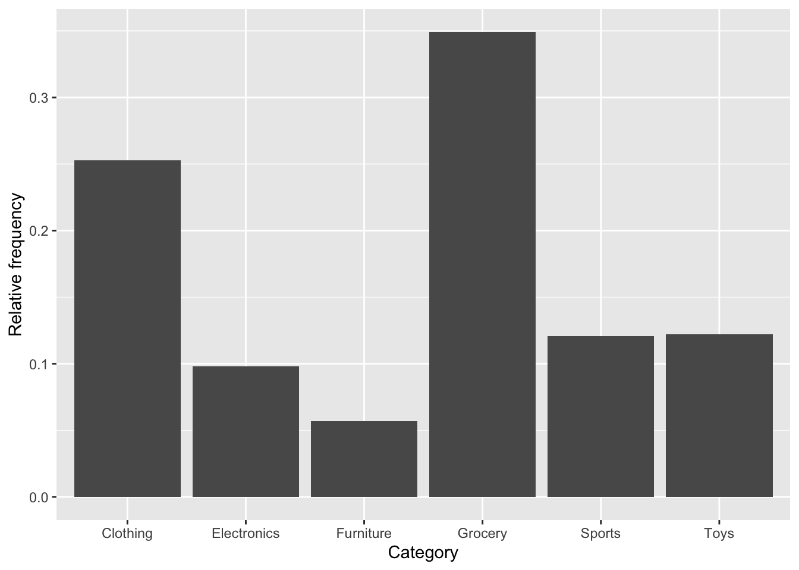
Figure 1.7: Bar chart (step 3)
How about adding some value labels to the bars? This can be done using geom_text(). Note that the sprintf() function is not mandatory and is only added to format the numeric labels here. The function takes two arguments: the first specifies the format wrapped in two % signs. Thus, %.0f means to format the value as a fixed point value with no digits after the decimal point, and %% is a literal that prints a “%” sign. The second argument is simply the numeric value to be used. In this case, the relative frequencies multiplied by 100 to obtain the percentage values. Using the vjust = argument, we can adjust the vertical alignment of the label. In this case, we would like to display the label slightly above the bars.
ggplot(table_plot_rel, aes(x = Category, y = Freq)) +
geom_col() + ylab("Relative frequency") + xlab("Category") +
geom_text(aes(label = sprintf("%.0f%%", Freq *
100)), vjust = -0.2)Figure 1.8: Bar chart (step 4)
We could go ahead and specify the appearance of every single element of the plot now. However, there are also pre-specified themes that include various formatting steps in one singe function. For example theme_minimal() would make the plot appear like this:
ggplot(table_plot_rel, aes(x = Category, y = Freq)) +
geom_col() + ylab("Relative frequency") + xlab("Category") +
geom_text(aes(label = sprintf("%.1f%%", Freq/sum(Freq) *
100)), vjust = -0.2) + theme_minimal()Figure 1.9: Bar chart (step 5)
In a next step, let’s prevent the axis labels from overlapping by rotating the labels.
ggplot(table_plot_rel, aes(x = Category, y = Freq)) +
geom_col() + ylab("Relative frequency") + xlab("Category") +
geom_text(aes(label = sprintf("%.1f%%", Freq/sum(Freq) *
100)), vjust = -0.2) + theme_minimal() + theme(axis.text.x = element_text(angle = 45,
vjust = 0.75))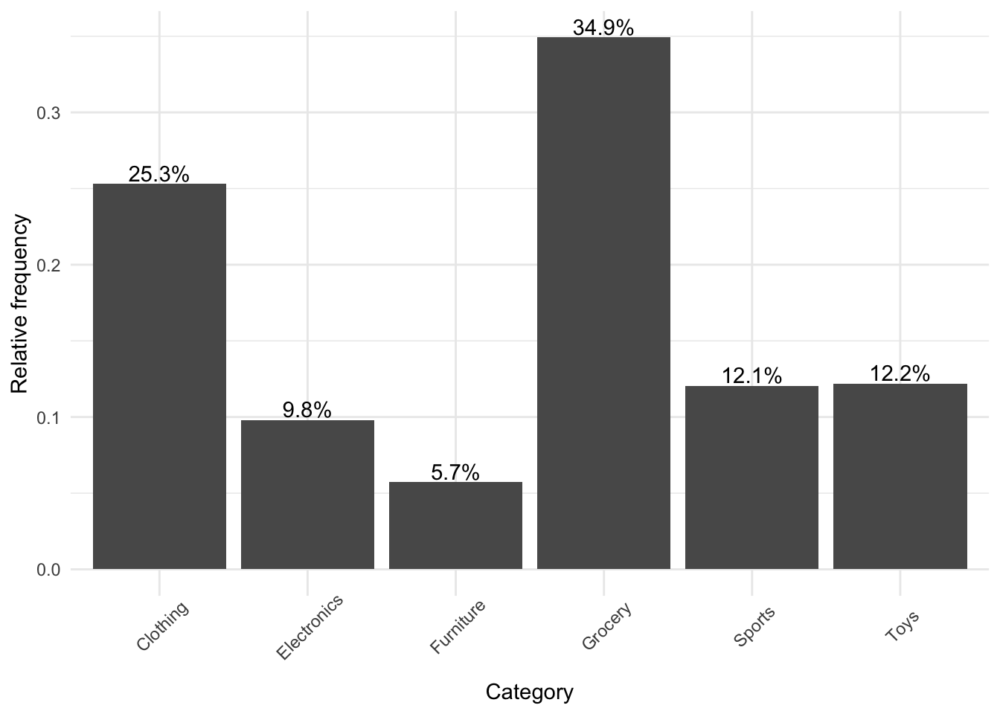
Figure 1.10: Bar chart (options 1)
We could also add a title and combine all labels using the labs function.
ggplot(table_plot_rel, aes(x = Category, y = Freq)) +
geom_col() + labs(x = "Category", y = "Relative frequency",
title = "Purchases by category") + geom_text(aes(label = sprintf("%.1f%%",
Freq/sum(Freq) * 100)), vjust = -0.2) + theme_minimal() +
theme(axis.text.x = element_text(angle = 45, vjust = 0.75),
plot.title = element_text(hjust = 0.5, color = "#666666"))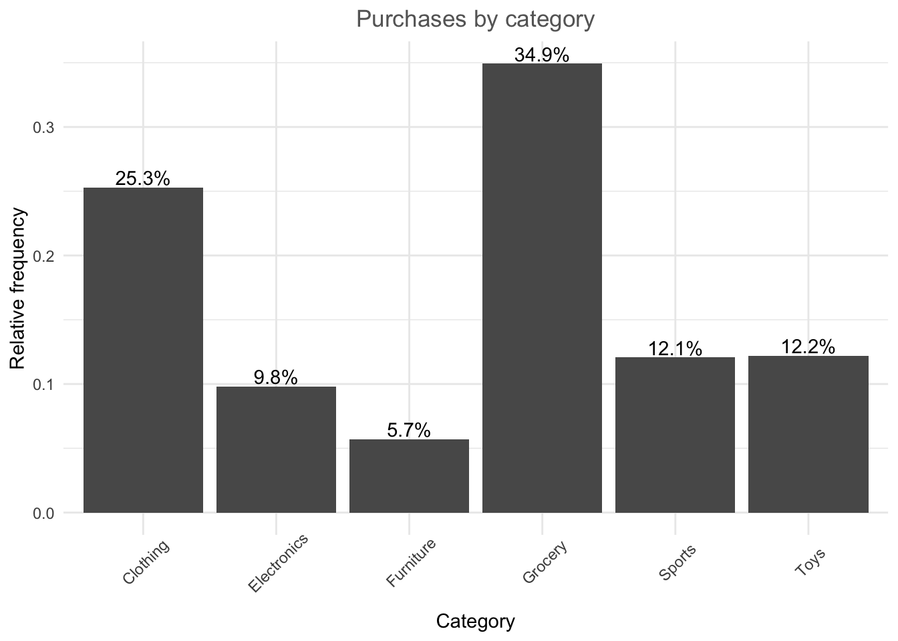
Figure 1.11: Bar chart (options 1)
We could also add some color to the bars using the colorspace library, which comes with a range of color palettes. For example the shading of the bar could reflect the frequency:
library(colorspace)
ggplot(table_plot_rel, aes(x = Category, y = Freq)) +
geom_col(aes(fill = Freq)) + labs(x = "Category",
y = "Relative frequency", title = "Purchases by category") +
geom_text(aes(label = sprintf("%.1f%%", Freq/sum(Freq) *
100)), vjust = -0.2) + theme_minimal() + ylim(0,
0.5) + scale_fill_continuous_sequential(palette = "Blues") +
theme(axis.text.x = element_text(angle = 45, vjust = 0.75),
plot.title = element_text(hjust = 0.5, color = "#666666"),
legend.title = element_blank())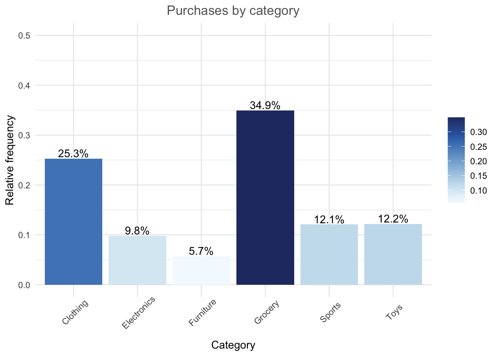
Figure 1.12: Bar chart (options 1)
Finally, we can reorder the bars by size using fct_reorder. The first argument to the function is the factor we want to reorder (genre) and the second the variable by which we want to order it (frequency):
ggplot(table_plot_rel, aes(x = Category, y = Freq)) +
geom_col(aes(x = fct_reorder(Category, Freq), fill = Freq)) +
labs(x = "Category", y = "Relative frequency",
title = "Purchases by category") + geom_text(aes(label = sprintf("%.1f%%",
Freq/sum(Freq) * 100)), vjust = -0.2) + theme_minimal() +
ylim(0, 0.5) + scale_fill_continuous_sequential(palette = "Blues") +
theme(axis.text.x = element_text(angle = 45, vjust = 0.75),
plot.title = element_text(hjust = 0.5, color = "#666666"),
legend.title = element_blank())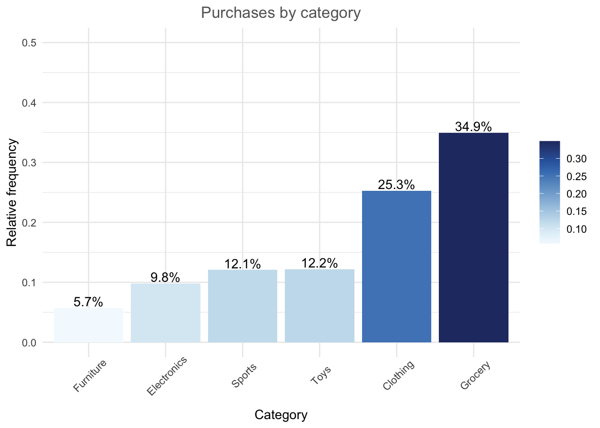
The default theme in ggplot is theme_classic(). For even more options, check out the ggthemes package, which includes formats for specific publications. You can check out the different themes here. For example theme_economist() uses the formatting of the journal “The Economist”.
There are various similar packages with pre-specified themes, like the ggthemr package, the ggtech package, the rockthemes package, or the tvthemes package.
In a next step, we might want to investigate whether the relative frequencies differ between categories in, for exmple, two selected stores: Store 1 and Store 2. For this purpose we first construct the conditional relative frequency table from the previous chapter again. Recall that the latter gives us the relative frequency within a group (in our case genres), as compared to the relative frequency within the entire sample.
store_1_store_2 <- sales_data %>%
filter(Store %in% c("Store 1", "Store 2")) %>%
mutate(Store = factor(Store))
table(select(store_1_store_2, Category, Store))## Store
## Category Store 1 Store 2
## Clothing 130 140
## Electronics 44 42
## Furniture 27 29
## Grocery 170 180
## Sports 55 62
## Toys 68 61table_plot_cond_rel <- as.data.frame(prop.table(table(select(store_1_store_2,
Category, Store)), 2)) #conditional relative frequencies
table_plot_cond_relWe can now take these tables to construct plots grouped by explicitness. To achieve this we simply need to add the facet_wrap() function, which replicates a plot multiple times, split by a specified grouping factor. Note that the grouping factor has to be supplied in R’s formula notation, hence it is preceded by a “~” symbol.
ggplot(table_plot_cond_rel, aes(x = fct_reorder(Category,
Freq), y = Freq)) + geom_col(aes(fill = Freq)) +
facet_wrap(~Store) + labs(x = "", y = "Relative frequency",
title = "Distribution of categories for Store 1 and Store 2") +
geom_text(aes(label = sprintf("%.0f%%", Freq *
100)), vjust = -0.2) + theme_minimal() + ylim(0,
1) + scale_fill_continuous_sequential(palette = "Blues") +
theme(axis.text.x = element_text(angle = 45, vjust = 1.1,
hjust = 1), plot.title = element_text(hjust = 0.5,
color = "#666666"), legend.position = "none")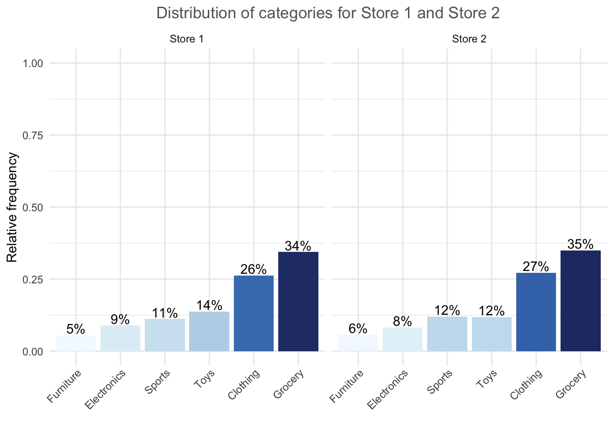
Figure 1.14: Grouped bar chart (facet_wrap)
4.2.2 Continuous variables
4.2.2.1 Histogram
Histograms can be created for continuous data using the geom_histogram() function. Note that the aes() function only needs one argument here, since a histogram is a plot of the distribution of only one variable. As an example, let’s consider our data set containing the sales data:
Now we can create the histogram using geom_histogram(). The argument binwidth specifies the range that each bar spans, col = "white" specifies the border of the bars to be white and fill = "lavenderblush3" sets the inner color of the bars to lavender color. For brevity, we have now also started naming the x and y axis with the single function labs(), instead of using the two distinct functions xlab() and ylab(). Let’s look at the distribution of streams of R&B songs:
sales_data |>
filter(Store == "Store 1") %>%
ggplot(aes(Sales_Amount)) + geom_histogram(binwidth = 50,
col = "white", fill = "lavenderblush3") + labs(x = "Amount of sales",
y = "Frequency", title = "Distribution of sales in Store 1") +
theme_minimal()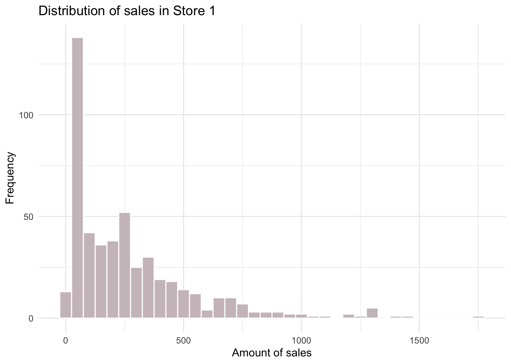
Figure 1.16: Histogram
If you would like to highlight certain points of the distribution, you can use the geom_vline (short for vertical line) function to do this. For example, we may want to highlight the mean and the median of the distribution.
sales_data |>
filter(Store == "Store 1") %>%
ggplot(aes(Sales_Amount)) + geom_histogram(binwidth = 50,
col = "white", fill = "lavenderblush3") + labs(x = "Amount of sales",
y = "Frequency", title = "Distribution of sales in Store 1",
subtitle = "Red vertical line = mean, green vertical line = median") +
geom_vline(aes(xintercept = mean(Sales_Amount)),
color = "red", size = 1) + geom_vline(aes(xintercept = median(Sales_Amount)),
color = "green", size = 1) + theme_minimal()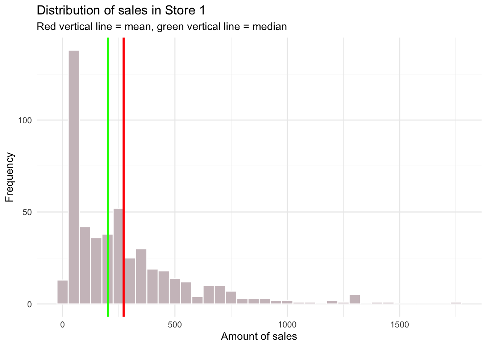
Figure 1.17: Histogram 2
In this case, you should indicate what the lines refer to. In the plot above, the ‘subtitle’ argument was used to add this information to the plot.
Note the difference between a bar chart and the histogram. While a bar chart is used to visualize the frequency of observations for each category of the selected categorical variable, the histogram shows the frequency distribution for continuous variables.
4.2.2.2 Boxplot
Another common way to display the distribution of continuous variables is through boxplots. ggplot will construct a boxplot if given the geom geom_boxplot(). In our case we might want to show the difference in sales amount between the categories.
ggplot(sales_data, aes(x = fct_reorder(Category, Sales_Amount),
y = Sales_Amount)) + geom_boxplot(coef = 3) + labs(x = "Category",
y = "Revenue per purchase") + theme_minimal() +
theme(plot.title = element_text(hjust = 0.5, color = "#666666"),
legend.position = "none")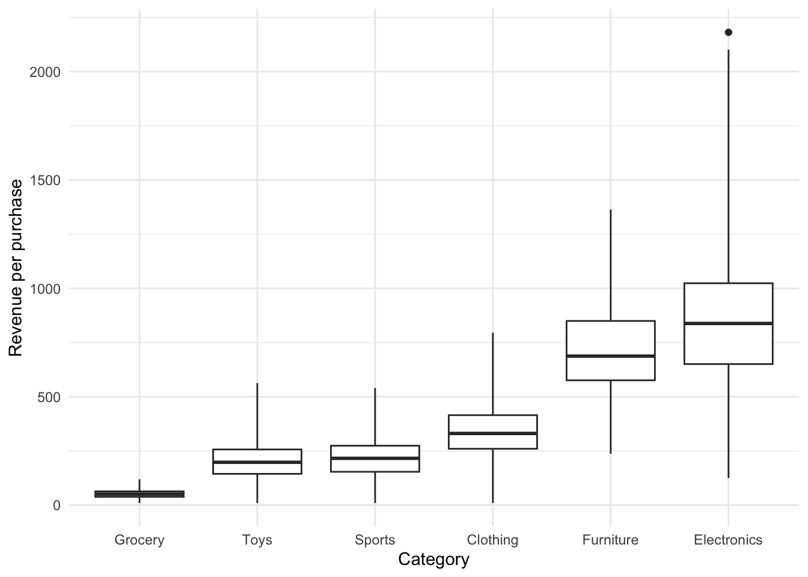
Figure 1.18: Boxplot by group
The following graphic shows you how to interpret the boxplot:

It is often meaningful to augment the boxplot with the data points using geom_jitter(). This way, differences in the distribution of the variable between the genres become even more apparent.
ggplot(sales_data, aes(x = fct_reorder(Category, Sales_Amount),
y = Sales_Amount)) + geom_jitter(colour = "red",
alpha = 0.1) + geom_boxplot(coef = 3, alpha = 0.1) +
labs(x = "Category", y = "Revenue per purchase") +
theme_minimal()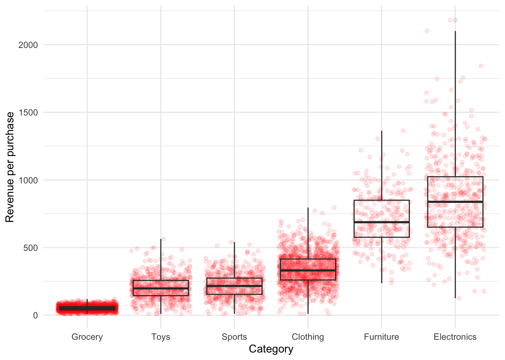
Figure 1.19: Boxplot by group
In case you would like to create the boxplot on the total data (i.e., not by group), just leave the x = argument within the aes() function empty:
ggplot(sales_data, aes(x = "", y = Sales_Amount)) +
geom_boxplot(coef = 3, alpha = 0.1) + labs(x = "",
y = "Revenue per purchase") + theme_minimal()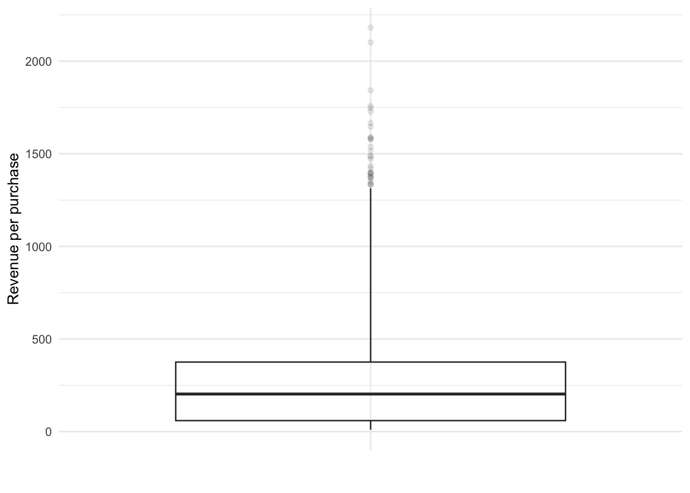
Figure 1.20: Single Boxplot
4.2.2.3 Plot of means
Another way to get an overview of the difference between two groups is to plot their respective means with confidence intervals. The mean and confidence intervals will enter the plot separately, using the geoms geom_bar() and geom_errorbar(). Don’t worry if you don’t know exactly how to interpret the confidence interval at this stage - we will cover this topic in the next chapter. Let’s assume we would like to plot the difference in sales amounts between the Groceries and all other categories. For this, we first need to create a dummy variable (i.e., a categorical variable with two levels) that indicates if a purchase is from the Groceries category or from any of the other categories. We can use the ifelse() function to do this, which takes 3 arguments, namely 1) the if-statement, 2) the returned value if this if-statement is true, and 3) the value if the if-statement is not true.
sales_data$category_dummy <- as.factor(ifelse(sales_data$Category ==
"Electronics", "Electronics", "other"))To make plotting the desired comparison easier, we can compute all relevant statistics first, using the summarySE() function from the Rmisc package.
library(Rmisc)
mean_data <- summarySE(sales_data, measurevar = "Sales_Amount",
groupvars = c("category_dummy"))
mean_dataThe output tells you how many observations there are per group, the mean number of sales amount per group, as well as the group-specific standard deviation, the standard error, and the confidence interval (more on this in the next chapter). You can now create the plot as follows:
ggplot(mean_data, aes(x = category_dummy, y = Sales_Amount)) +
geom_bar(position = position_dodge(0.9), colour = "white",
fill = "lavenderblush3", stat = "identity",
width = 0.65) + geom_errorbar(position = position_dodge(0.9),
width = 0.15, aes(ymin = Sales_Amount - ci, ymax = Sales_Amount +
ci)) + labs(x = "Category", y = "Average amount of sales",
title = "Average amount of sales by category") +
theme_minimal() + theme(plot.title = element_text(hjust = 0.5,
color = "#666666"))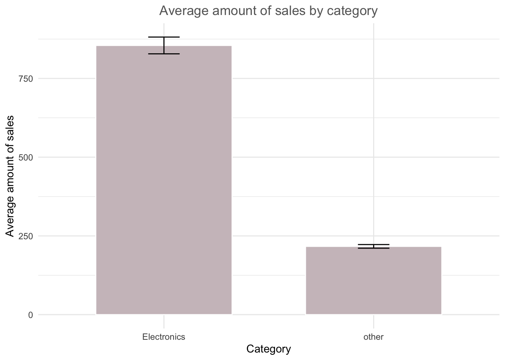
Figure 1.23: Plot of means
As can be seen, there is a large difference between the categories with respect to the average amount of sales.
4.2.2.4 Grouped plot of means
We might also be interested to investigate a second factor. Say, we would like to find out if there is a difference between categories with respect to the store (i.e., whether the purchase vas made in Store 1 or Store 2). Can we find evidence that products from electronics category sell better in one store than in another. We can compute the statistics using the summarySE() function by simply adding the second variable (Store) to the ‘groupvars’ argument.
mean_data2 <- sales_data %>%
filter(Store %in% c("Store 1", "Store 2")) %>%
mutate(Store = factor(Store))
mean_data2 <- summarySE(mean_data2, measurevar = "Sales_Amount",
groupvars = c("category_dummy", "Store"))
mean_data2Now we obtained the results for four different groups (2 categories x 2 stores) and we can amend the plot easily by adding the ‘fill’ argument to the ggplot() function. The scale_fill_manual() function is optional and specifies the color of the bars manually.
ggplot(mean_data2, aes(x = category_dummy, y = Sales_Amount,
fill = Store)) + geom_bar(position = position_dodge(0.9),
colour = "white", stat = "identity") + geom_errorbar(position = position_dodge(0.9),
width = 0.2, aes(ymin = Sales_Amount - ci, ymax = Sales_Amount +
ci)) + scale_fill_manual(values = c("lavenderblush3",
"grey90")) + labs(x = "Category", y = "Average amount of sales",
title = "Average amount of sales by category and store") +
theme_minimal() + theme(plot.title = element_text(hjust = 0.5,
color = "#666666"))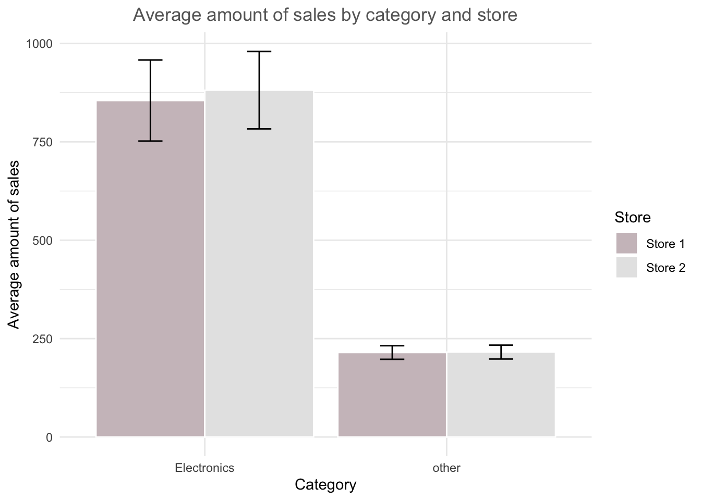
Figure 1.25: Grouped plot of means
The results of the analysis show that also in the there is no big difference between sales of electronic products in two stores.
4.2.2.5 Scatter plot
The most common way to show the relationship between two continuous variables is a scatterplot. As an example, let’s investigate if there is an association between the sales amount and the customer age. The following code creates a scatterplot with some additional components. The geom_smooth() function creates a smoothed line from the data provided. In this particular example we tell the function to draw the best possible straight line (i.e., minimizing the distance between the line and the points) through the data (via the argument method = "lm"). Note that the “shape = 1” argument passed to the geom_point() function produces hollow circles (instead of solid) and the “fill” and “alpha” arguments passed to the geom_smooth() function specify the color and the opacity of the confidence interval, respectively.
ggplot(sales_data, aes(Sales_Amount, Customer_Age)) +
geom_point(shape = 1) + labs(x = "Genre", y = "Relative frequency") +
geom_smooth(method = "lm", fill = "blue", alpha = 0.1) +
labs(x = "Amount spent", y = "Customer age", title = "Scatterplot of amount spent and customer age") +
theme_minimal() + theme(plot.title = element_text(hjust = 0.5,
color = "#666666"))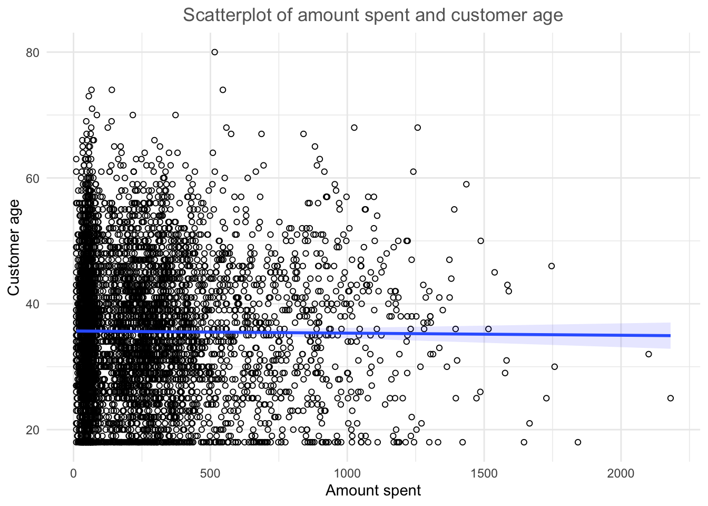
Figure 4.2: Scatter plot
As you can see, there appears to not be any strong relationship between sales amount and customer age.
4.2.2.5.1 Grouped scatter plot
It could be that customers of different ages shop differently by category. We can visually capture such differences with a grouped scatter plot. By adding the argument colour = Category to the aesthetic specification, ggplot automatically treats the categories as distinct groups and plots accordingly.
ggplot(sales_data, aes(Sales_Amount, Customer_Age,
colour = Category)) + geom_point(shape = 1) + geom_smooth(method = "lm",
alpha = 0.1) + labs(x = "Revenue per purchase",
y = "Age", title = "Scatterplot of revenue and age by product category",
colour = "Category") + scale_color_manual(values = c("lightblue",
"darkblue", "lavenderblush3", "red3", "green4",
"gold2")) + theme_minimal() + theme(plot.title = element_text(hjust = 0.5,
color = "#666666"))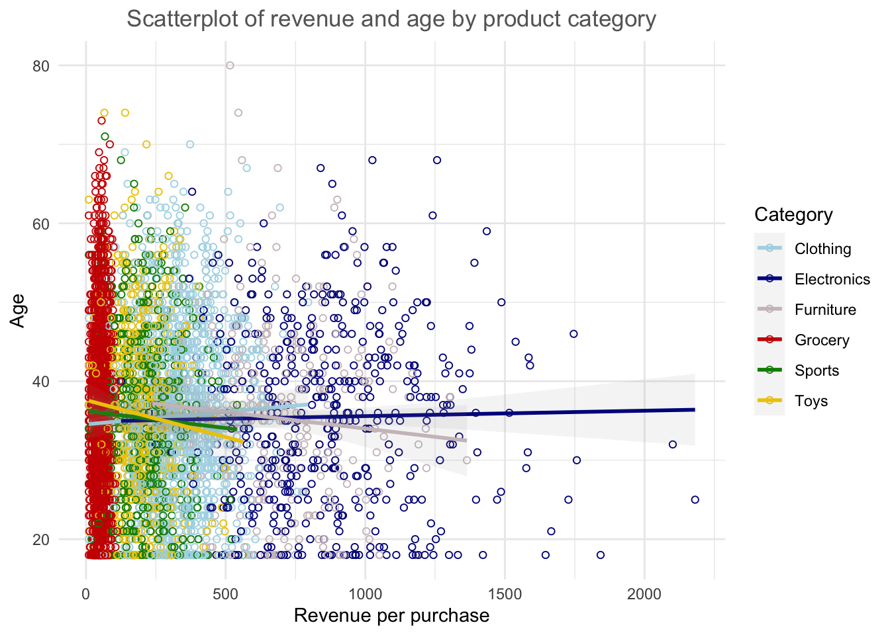
Figure 4.3: Grouped scatter plot
It appears from the plot that there is a reverse association between sales amount and customer age in, for example, toys category.
4.2.2.6 Line plot
Another important type of plot is the line plot used if, for example, you have a variable that changes over time and you want to plot how it develops over time. To demonstrate this we will investigate the same data set but focus on sales amount over time. Let’s start with subsetting the data from only one category, for example, Clothing.
Given the correct aes() and geom specification ggplot constructs the correct plot for us. In order to make large numbers more readable we use the label_comma function from the scales package in the scale_y_continuous layer.
sales_data_clothing %>%
group_by(Date) %>%
dplyr::summarize(total_sales = sum(Sales_Amount)) %>%
ggplot(., aes(x = Date, y = total_sales)) + geom_line(color = "lavenderblush4") +
labs(x = "", y = "Total sales of clothing (EUR)",
title = "Daily revenues in clothing category") +
theme_minimal() + scale_y_continuous(labels = scales::label_comma()) +
theme(plot.title = element_text(hjust = 0.5, color = "#666666"))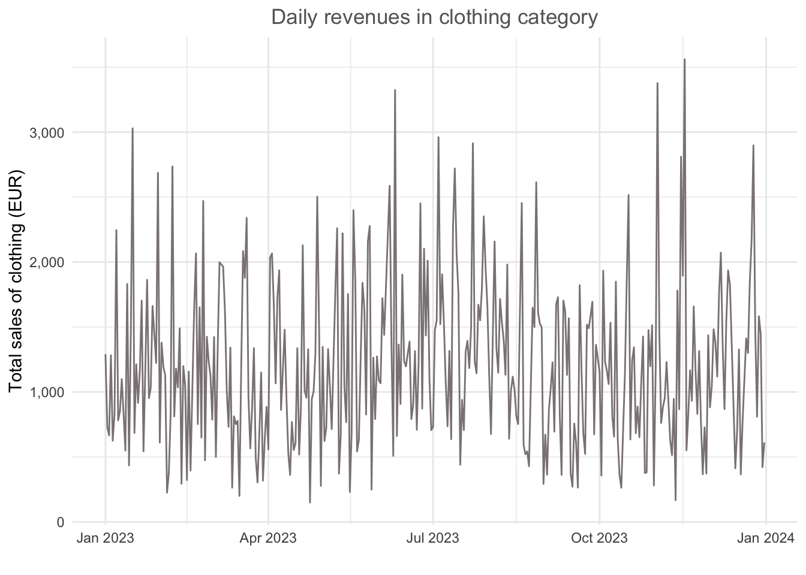
Figure 4.4: Line plot
For better readability, we can aggregate the data by weeks (i.e., obtain total weekly sales) instead of days:
library(lubridate)
sales_clothing_weekly <- sales_data_clothing %>%
mutate(Week = floor_date(Date, "week")) %>%
filter(Week < max(Week)) %>%
group_by(Week) %>%
dplyr::summarise(Weekly_Sales = sum(Sales_Amount))
ggplot(sales_clothing_weekly, aes(x = Week, y = Weekly_Sales)) +
geom_line(color = "lavenderblush4") + theme_minimal() +
labs(x = "Week", y = "Total sales of clothing (EUR)",
title = "Weekly revenues in clothing category") +
scale_x_date(date_labels = "%b %d", date_breaks = "1 month") +
theme(axis.text.x = element_text(angle = 45, vjust = 1.1,
hjust = 1), plot.title = element_text(hjust = 0.5,
color = "#666666"))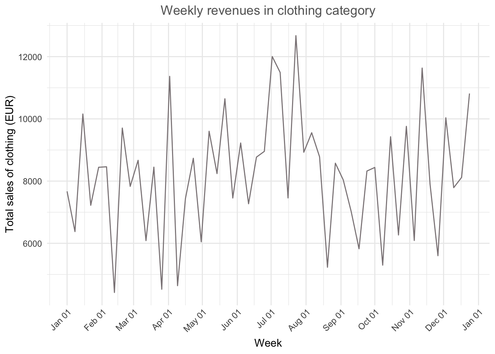
Figure 4.5: Line plot (weekly)
We can now include the other specified countries in the plot by using the ‘color’ argument.
sales_data_compare <- filter(sales_data, Category %in%
c("Clothing", "Electronics", "Toys"))
sales_data_compare <- sales_data_compare %>%
dplyr::mutate(Month = lubridate::floor_date(Date,
"month")) %>%
group_by(Month, Category) %>%
dplyr::summarise(Monthly_Sales = sum(Sales_Amount))
ggplot(sales_data_compare, aes(x = Month, y = Monthly_Sales,
color = Category)) + geom_line() + labs(x = "Month",
y = "Sales", title = "Monthly sales by category") +
theme_minimal() + theme(plot.title = element_text(hjust = 0.5,
color = "#666666")) + scale_y_continuous(labels = scales::label_comma()) +
scale_color_manual(values = c("lightblue", "red3",
"green4")) + theme(axis.text.x = element_text(angle = 45,
vjust = 1.1, hjust = 1), plot.title = element_text(hjust = 0.5,
color = "#666666"))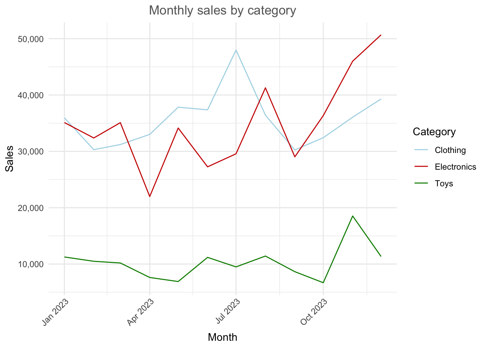
Figure 4.6: Line plot (by category)
One issue in plot like this can be that the scales between categories are different (i.e., in clothing category, there are more purchases that eventually sum up to higher monthly revenues). You could also use the facet_wrap() function to create one individual plot by category and specify ‘scales = “free_y”’ so that each individual plot has its own scale on the y-axis.
ggplot(sales_data_compare, aes(x = Month, y = Monthly_Sales)) +
geom_line(color = "lavenderblush4") + labs(x = "Month",
y = "Sales", title = "Monthly sales by category") +
facet_wrap(~Category, scales = "free_y") + theme_minimal() +
theme(plot.title = element_text(hjust = 0.5, color = "#666666")) +
scale_y_continuous(labels = scales::label_comma()) +
scale_color_manual(values = c("lightblue", "red3",
"green4")) + theme(axis.text.x = element_text(angle = 45,
vjust = 1.1, hjust = 1), plot.title = element_text(hjust = 0.5,
color = "#666666"))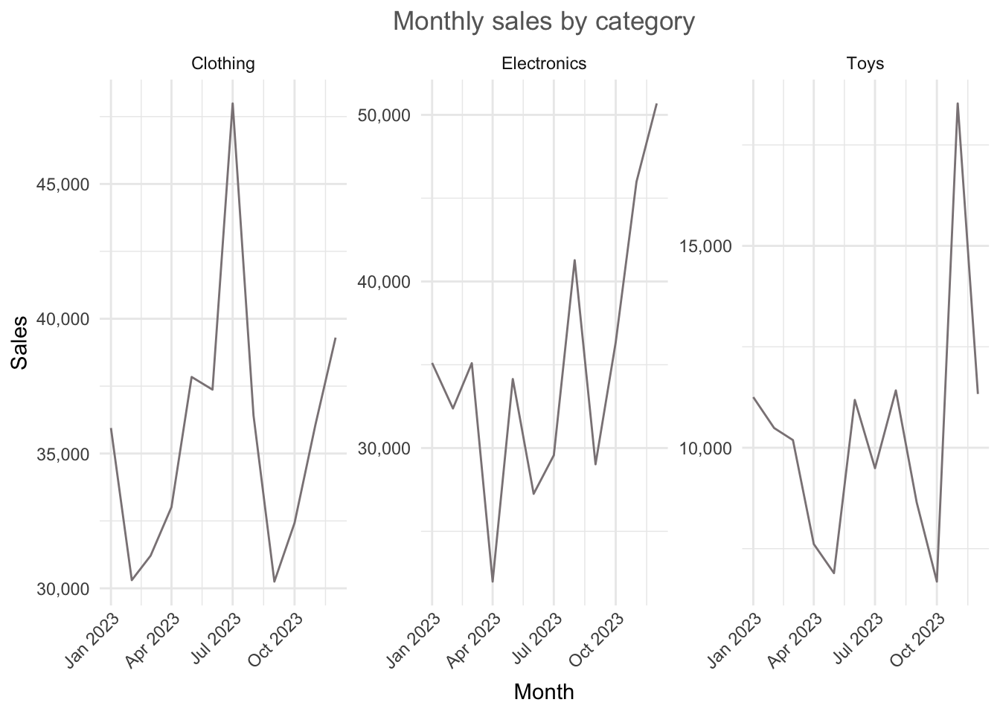
Figure 4.7: Line plot (facet wrap)
Now it’s easier to see that the trends are different between categories, specifically, notice the seasonality that is typical for products from the respective product groups.
4.2.3 Saving plots on your device
To save the last displayed plot, simply use the function ggsave(), and it will save the plot to your working directory. Use the arguments heightand width to specify the size of the file. You may also choose the file format by adjusting the ending of the file name. E.g., file_name.jpg will create a file in JPG-format, whereas file_name.png saves the file in PNG-format, etc..
4.2.4 ggplot extensions
As the ggplot2 package became more and more popular over the past years, more and more extensions have been developed by users that can be used for specific purposes that are not yet covered by the standard functionality of ggplot2. You can find a list of the extensions here. Below, you can find some example for the additional options.
4.2.4.1 Results of statistical tests (ggstatsplot)
You may use the ggstatplot package to augment your plots with the results from statistical tests, such as an ANOVA. You can find a presentation about the capabilities of this package here. The boxplot below shows an example.
library(ggstatsplot)
sales_data_anova <- filter(sales_data, Category %in% c("Clothing", "Electronics","Toys","Furniture"))
ggbetweenstats(
data = sales_data_anova,
title = "Sales by category", # title for the plot
plot.type = "box",
x = Category, # 4 groups
y = Sales_Amount,
type = "p", # default
messages = FALSE,
bf.message = FALSE,
pairwise.comparisons = TRUE # display results from pairwise comparisons
)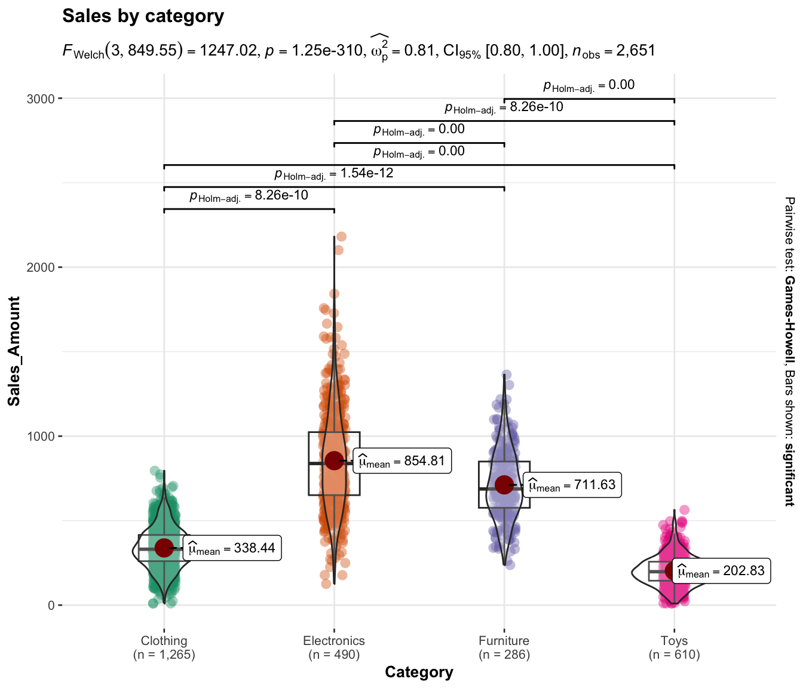
Figure 4.8: Boxplot using ggstatsplot package
Learning check
(LC2.1) For which data types is it meaningful to compute the mean?
(LC2.2) How can you compute the standardized variate of a variable X?
You wish to analyze the following data frame ‘df’ containing information about cars
(LC2.3) How could you add a new variable containing the z-scores of the variable ‘mpg’ in R?
(LC2.4) How could you produce the below output?
(LC2.5) The last column “carb” indicates the number of carburetors each model has. By using a function we got to know the number of car models that have a certain number carburetors. Which function helped us to obtain this information?
##
## 1 2 3 4 6 8
## 7 10 3 10 1 1(LC2.6) What type of data can be meaningfully depicted in a scatter plot?
(LC2.7) Which statement about the graph below is true?
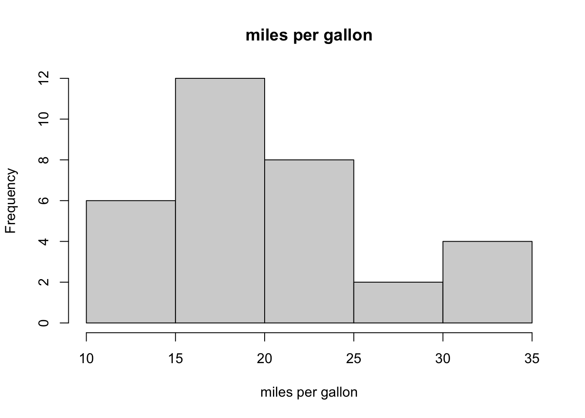
(LC2.8) Which statement about the graph below is true?
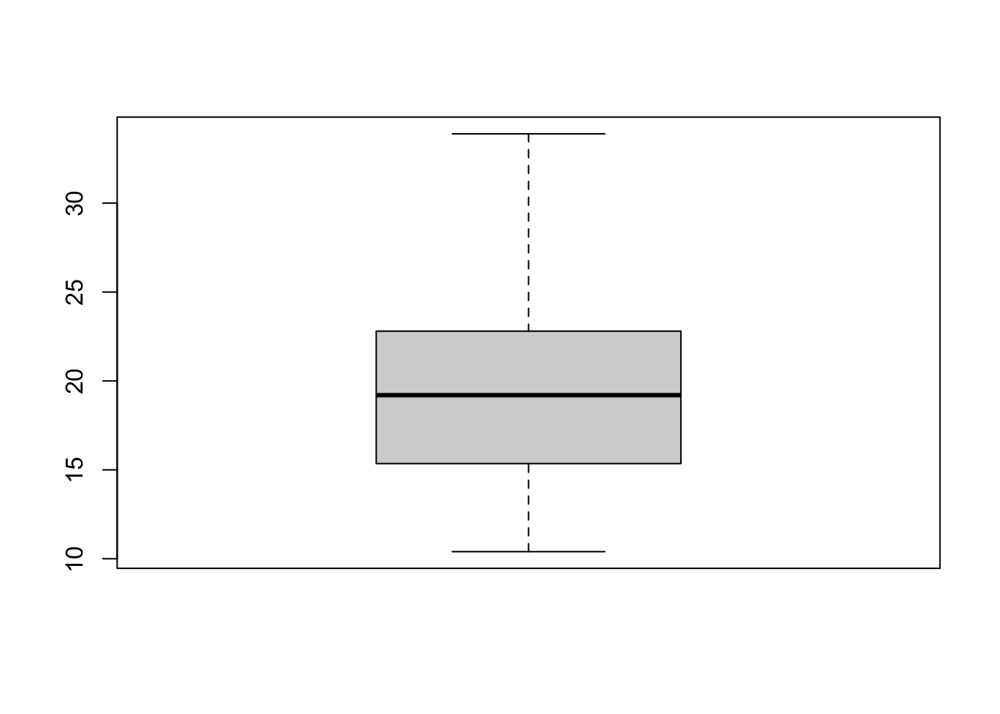
(LC2.9) Which function can help you to save a graph made with ggplot()?
(LC2.10) For a variable that follows a normal distribution, within how many standard deviations of the mean are 95% of values?
References
- Field, A., Miles J., & Field, Z. (2012). Discovering Statistics Using R. Sage Publications.
- Chang, W. (2020). R Graphics Cookbook, 2nd edition (https://r-graphics.org/)
- Grolemund, G. & Wickham, H. (2020). R for Data Science (https://r4ds.had.co.nz/)